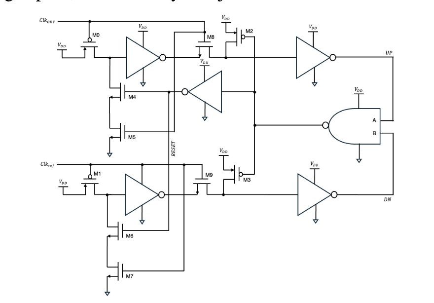
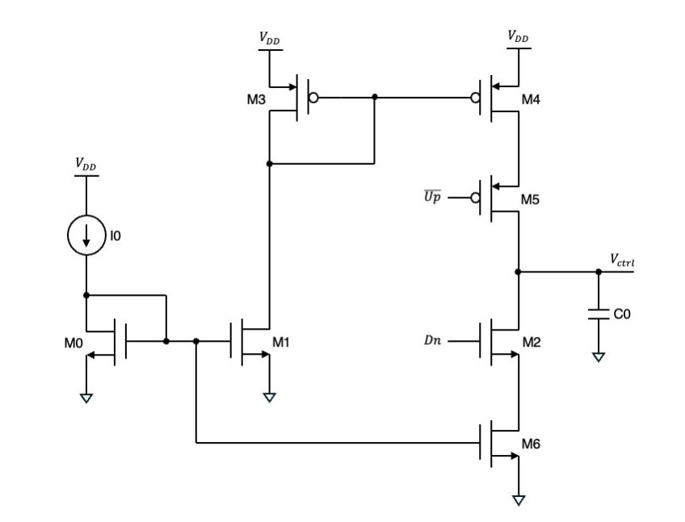
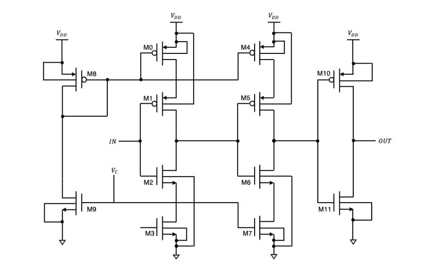
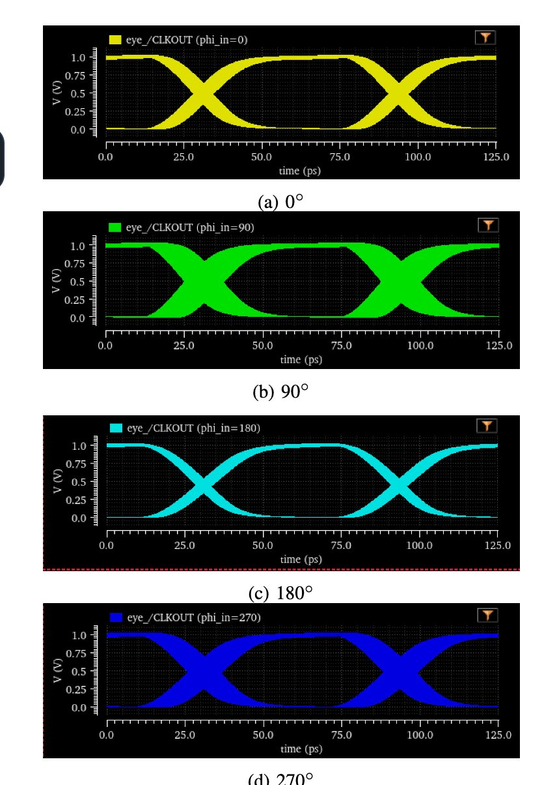
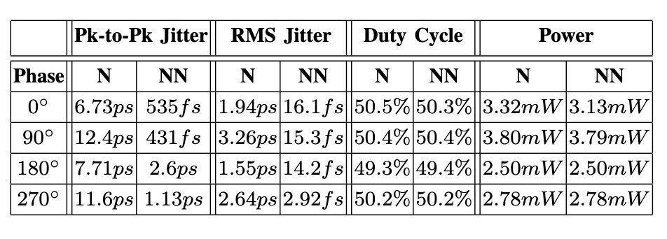
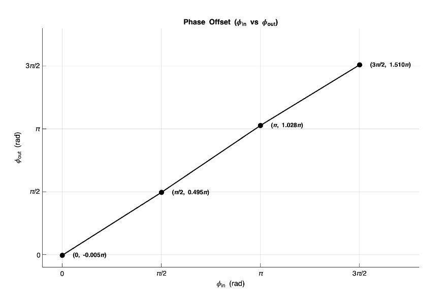

Designed a low-power, low-jitter 8 GHz Delay Lock Loop (DLL) in 45nm CMOS technology as part of EE124 (Mixed-mode Integrated Circuits). The DLL synchronizes a clock signal with minimal phase offset and jitter — critical in high-speed communication and processor clock distribution networks.
Detects the phase and frequency difference between the reference clock and the feedback signal. Implemented with a pair of D flip-flops and a reset path to generate UP/DOWN correction pulses.

Converts PFD output pulses into a smooth control voltage. The loop filter sets the loop bandwidth and stability characteristics of the DLL.

A chain of delay cells whose delay is tuned by the control voltage from the loop filter. The total delay of the VCDL is driven to exactly one reference clock period.

Simulations were run in Cadence Maestro using Spectre. Verified lock behavior under both clean and noisy supply and input clock conditions across all four output phases (0°, 90°, 180°, 270°).



| Technology | 45nm CMOS |
| Target Frequency | 8 GHz |
| Peak-to-Peak Jitter | < 11 ps (clean and noisy supply) |
| Power Consumption | < 3.8 mW |
| Simulation Tool | Cadence Spectre via Maestro |
Awarded Best DLL Project in EE124 for best combined performance across power consumption, phase offset, and peak-to-peak jitter among the class submissions.